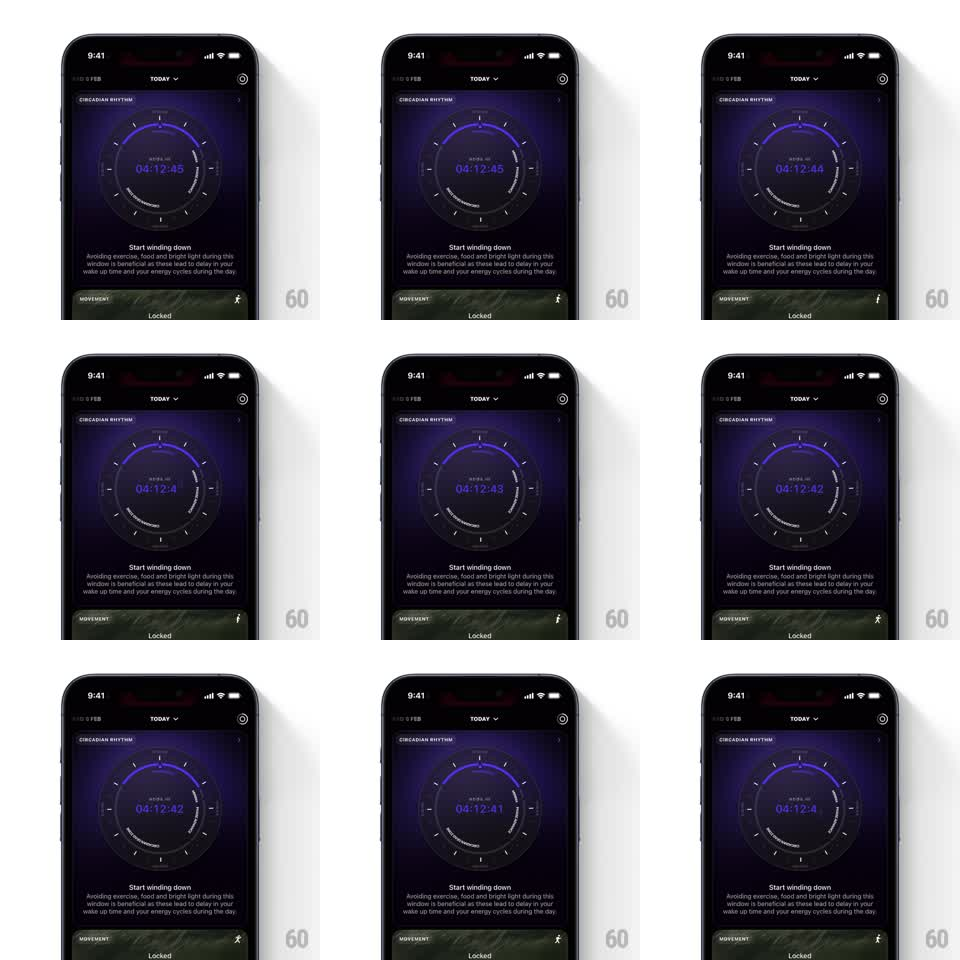

Media
Frame-by-frame

Rebuild this animation 1:1: Ultrahuman's wind-down countdown - the timer inside the circadian dial rolls its digits vertically like a drum counter as each second ticks.

Rebuild this animation 1:1: Ultrahuman's wind-down countdown - the timer inside the circadian dial rolls its digits vertically like a drum counter as each second ticks. ## Integration Integration: stack-agnostic spec - springs given as stiffness/damping, timed motions as duration + curve; map every value to your framework and animation library of choice. ## Scene Dark circadian rhythm card: a purple-blue circular phase dial, "HOURS LEFT" label, and a large monospaced countdown (04:12:45) at its center. "Start winding down" copy block below. ## Motion spec Pattern: rolling-digit countdown, continuous. - Each second, the changing digit rolls vertically out of view as the new digit rolls in from the opposite side (250ms, slight ease-out), like a split-flap/odometer drum. - Only digits that change animate; stable digits hold perfectly still. - Lower-place digits roll every second; tens cascade naturally when their neighbor carries. - The dial ring and labels stay static; the roll is the only motion. ## Calibration - Roll direction is consistent (new values enter from the top for a countdown) - mixed directions read as a slot machine. - Digits are monospaced and center-pinned; any horizontal jitter breaks the drum illusion. ## Reduced motion Digits crossfade on change (150ms). ## Don't miss - The roll is clipped to the digit's own cell - neighboring digits must never see the travel. - The colon separators blink or hold steady, but never roll.